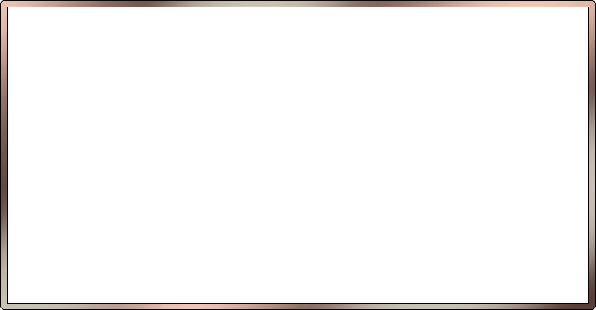

Мемориальный
комплекс
"Хатынь"
курган славы
Мемориальный
комплекс
Шталаг 342
Мемориал
"Яма"
Мемориал
вечный огонь
Памятник
ополченцам-подпольщикам
дулаг 121
Памятник узникам
концлагеря
Памятник войнам
освободителям
Памятник
жертвам
холокоста
Мемориальный комплекс
осводбодителям пинска
Монумент
с танком
Памятник
урбановичу
Памятник-танк
на могиле генерала
Б.С.Бахарова
Памятник воинам
-интернационалистам
Памятник битве при лесной
Курган
славы
Памятник десантникам
Мемориальный комплекс в честь советских воинов-освободителей, партизан и подпольщиков Витебщины
Мемориальный комплекс
"Прорыв"
Памятник Памяти
Узников Гетто
Памятник Учителям и Ученикам - Погибшим В Годы Великой Отечественной Войны
Вечный огонь
комплекс
холокоста
Буйническое поле
Бресткая крепость

 Интерактивные часы
Интерактивные часы